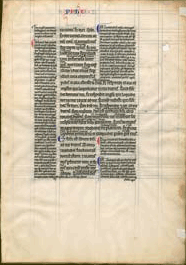

This bible, handwritten in France in 1190, uses a pale blue grid to produce accurate column and paragraph alignment, equivalent to modern typographic grids. Note the precise and careful spacing of the margins, the columns, and the breaks between boxes. The header rides in its own box at the top of the page, and is repeated on each page. The 'breakout' paragraph in the center column is carefully contained within the double-column area. This is an elegant page grid, providing for a lot of variation, and could be used today for book or magazine design.
